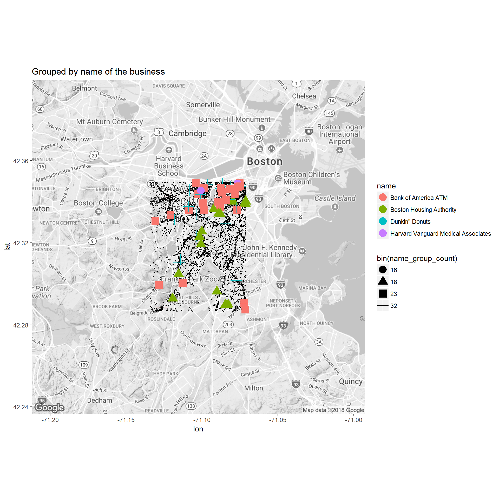
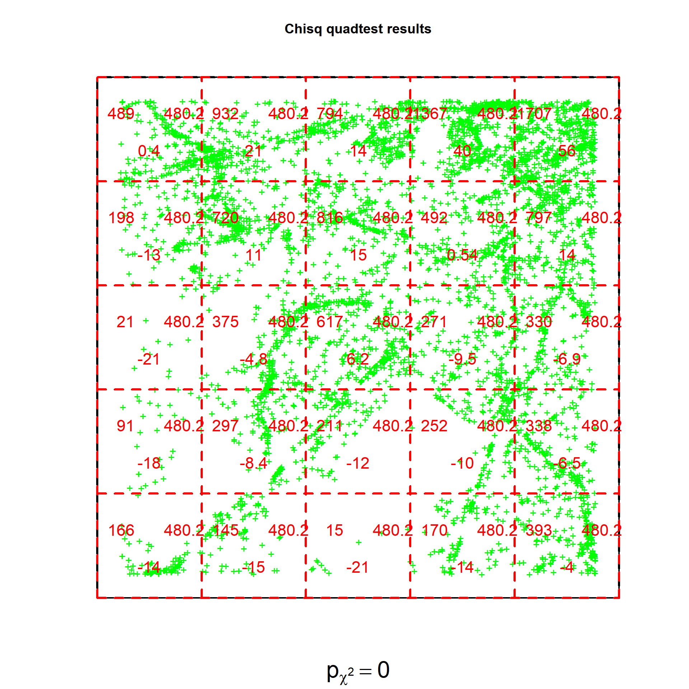
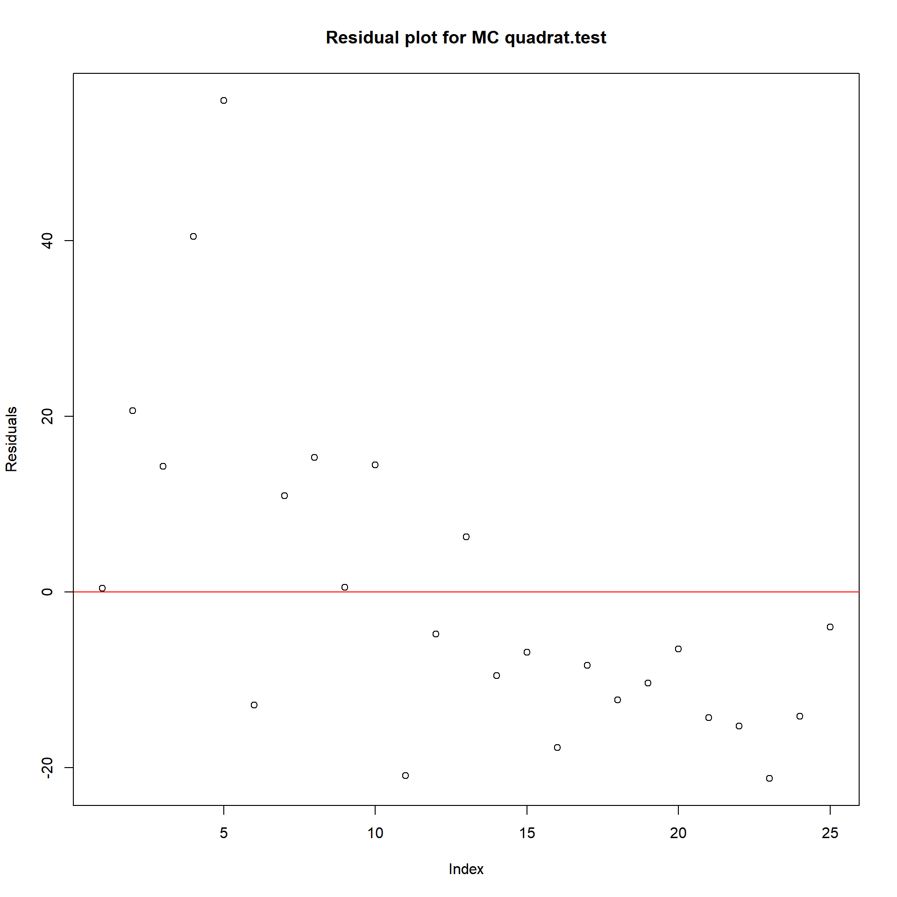

Bosbiz Spatial Analysis
Harshaa
Thu Mar 01 16:19:25 2018
Answer two questions:
1. Are the points randomly distributed or is there a pattern?
2. If they’re not random, identify clusters of points.
0.1 EDA
Before point pattern analysis let us see what the data is telling us and understand what we are dealing with.
This will help us make better decisions and hypothesis about the point patterns
libs = c("readr", "Hmisc", "dplyr", "magrittr", "ggplot2","data.table","OneR","ggmap","googleVis","spatstat","dbscan")
lapply(libs, require, character.only = T)
op <- options(gvis.plot.tag='chart') # for plots to be generated in this script and not the default (browser)
# read the data set
#setwd('path to data')
bosbiz <- read_csv("bosbiz.csv")0.1.1 First glance
head(bosbiz)## # A tibble: 6 × 5
## name sic lon lat gh7
## <chr> <int> <dbl> <dbl> <chr>
## 1 BANYAN NA -71.07167 42.34410 drt2ysx
## 2 CAFFE NERO NA -71.11475 42.31100 drt2twr
## 3 MARIO''S SUB & SALADS NA -71.07106 42.34506 drt2ysx
## 4 UNO PIZZERIA & GRILL NA -71.09706 42.34859 drt2yjk
## 5 PANERA BREAD/SAINT LOUIS BREAD CO. NA -71.10237 42.34377 drt2yh2
## 6 STARBUCKS NA -71.08451 42.34615 drt2ykvsummary(bosbiz) # as mentioned, lat,lon suggest close area and not wide spread, i.e location : Boston only## name sic lon lat
## Length:12149 Min. : 1399905 Min. :-71.13 Min. :42.29
## Class :character 1st Qu.:58129903 1st Qu.:-71.11 1st Qu.:42.32
## Mode :character Median :73490202 Median :-71.09 Median :42.34
## Mean :69127110 Mean :-71.10 Mean :42.33
## 3rd Qu.:80490000 3rd Qu.:-71.08 3rd Qu.:42.34
## Max. :97219901 Max. :-71.07 Max. :42.35
## NA's :2939
## gh7
## Length:12149
## Class :character
## Mode :character
##
##
##
## sapply(bosbiz, class)## name sic lon lat gh7
## "character" "integer" "numeric" "numeric" "character"describe(bosbiz) # 12149 * 5 # SIC with dups and NAs ; name, gh7, lat and lon with dups but no NAs## bosbiz
##
## 5 Variables 12149 Observations
## ---------------------------------------------------------------------------
## name
## n missing distinct
## 12149 0 10834
##
## lowest : 0 Time Locksmith Service 007 24 Hour Locksmith 007 Emergency 007 Locksmith 1-800-Locksmith
## highest: Zola Photographics Zolalo Cocina Mexicana Zoom Telephonics Zoots Zoots Brookline 14
## ---------------------------------------------------------------------------
## sic
## n missing distinct Info Mean Gmd .05 .10
## 9210 2939 1151 1 69127110 17162259 41190103 53310000
## .25 .50 .75 .90 .95
## 58129903 73490203 80490000 86410300 87419905
##
## lowest : 1399905 1799907 1810000 1810203 1910000
## highest: 95319902 96210000 96219904 96510401 97219901
## ---------------------------------------------------------------------------
## lon
## n missing distinct Info Mean Gmd .05 .10
## 12149 0 5091 1 -71.1 0.02072 -71.13 -71.12
## .25 .50 .75 .90 .95
## -71.11 -71.09 -71.08 -71.07 -71.07
##
## lowest : -71.13406 -71.13405 -71.13399 -71.13393 -71.13392
## highest: -71.07093 -71.07093 -71.07093 -71.07093 -71.07091
## ---------------------------------------------------------------------------
## lat
## n missing distinct Info Mean Gmd .05 .10
## 12149 0 5070 1 42.33 0.01897 42.29 42.30
## .25 .50 .75 .90 .95
## 42.32 42.34 42.34 42.35 42.35
##
## lowest : 42.28656 42.28656 42.28657 42.28659 42.28660
## highest: 42.34952 42.34953 42.34954 42.34954 42.34954
## ---------------------------------------------------------------------------
## gh7
## n missing distinct
## 12149 0 1324
##
## lowest : drt2t63 drt2t64 drt2t65 drt2t66 drt2t67
## highest: drt2ytm drt2ytn drt2ytp drt2ytq drt2ytr
## ---------------------------------------------------------------------------bosbiz <- distinct(bosbiz,.keep_all = T) # let's remove duplicate rows (if any)
describe(bosbiz) # down to 12004 * 5 # there were indeed 12149-12004= 145 dup rows## bosbiz
##
## 5 Variables 12004 Observations
## ---------------------------------------------------------------------------
## name
## n missing distinct
## 12004 0 10834
##
## lowest : 0 Time Locksmith Service 007 24 Hour Locksmith 007 Emergency 007 Locksmith 1-800-Locksmith
## highest: Zola Photographics Zolalo Cocina Mexicana Zoom Telephonics Zoots Zoots Brookline 14
## ---------------------------------------------------------------------------
## sic
## n missing distinct Info Mean Gmd .05 .10
## 9077 2927 1151 1 69086066 17118093 41190103 53310000
## .25 .50 .75 .90 .95
## 58129902 73360103 80420000 86410300 87419902
##
## lowest : 1399905 1799907 1810000 1810203 1910000
## highest: 95319902 96210000 96219904 96510401 97219901
## ---------------------------------------------------------------------------
## lon
## n missing distinct Info Mean Gmd .05 .10
## 12004 0 5091 1 -71.1 0.02073 -71.13 -71.12
## .25 .50 .75 .90 .95
## -71.11 -71.09 -71.08 -71.07 -71.07
##
## lowest : -71.13406 -71.13405 -71.13399 -71.13393 -71.13392
## highest: -71.07093 -71.07093 -71.07093 -71.07093 -71.07091
## ---------------------------------------------------------------------------
## lat
## n missing distinct Info Mean Gmd .05 .10
## 12004 0 5070 1 42.33 0.01903 42.29 42.30
## .25 .50 .75 .90 .95
## 42.32 42.34 42.34 42.35 42.35
##
## lowest : 42.28656 42.28656 42.28657 42.28659 42.28660
## highest: 42.34952 42.34953 42.34954 42.34954 42.34954
## ---------------------------------------------------------------------------
## gh7
## n missing distinct
## 12004 0 1324
##
## lowest : drt2t63 drt2t64 drt2t65 drt2t66 drt2t67
## highest: drt2ytm drt2ytn drt2ytp drt2ytq drt2ytr
## ---------------------------------------------------------------------------hist(bosbiz[,'lon'])hist(bosbiz[,'lat'])Clear uneven distribution
0.1.2 Map view
Let’s first just plot all the businesses onto the map
plot(bosbiz %>% mutate(latlon = paste(lat, lon, sep = ':')) %>%
gvisMap(
locationvar = "latlon",
tipvar = "name",
options = list(
showTip = T,
showLine = F,
mapType = 'normal',
enableScrollWheel = TRUE,
useMapTypeControl = T,
width = 1400,
height = 800)))Northeast seems to be popular location!
0.1.2.1 Let’s see which are the most popular businesses by name in our data
bosbiz <- as.data.frame(group_by(bosbiz,name) %>% mutate(name_group_count=n()))
filter(bosbiz,name_group_count > 5) %>% ggplot(aes(reorder(name,name_group_count)))+
geom_bar( fill ='red') + xlab('Name') + ggtitle('Most frequent by name') + coord_flip()We can notice that Dunkin" Donuts appears twice because of different writing styles
Since we are concerned with location and not names, as of now we can ignore this
window<-make_bbox(bosbiz$lon,bosbiz$lat)
map <- ggmap(get_map(window,zoom=12,color='bw'))
less_15 <- map + geom_point(aes(lon,lat),col='black',size=.4,
data = filter(bosbiz,name_group_count<15))
less_15 + geom_point(aes(lon,lat,shape=bin(name_group_count),color=name),
data = filter(bosbiz,name_group_count>15),size=5)+
ggtitle('Grouped by name of the business')
Just as before, popular bussiness seem to be towards northeast
0.1.3 Let’s now check which are the most popular businesses by SIC in our data
bosbiz <- as.data.frame(group_by(bosbiz,sic) %>% mutate(sic_group_count=n()))
filter(bosbiz[!is.na(bosbiz$sic),],sic_group_count > 50) %>%
ggplot(aes(reorder(sic,sic_group_count)))+
geom_bar( fill ='red') + xlab('SIC') +ggtitle('Most frequent by SIC') + coord_flip()head(bosbiz[which(bosbiz$sic==80119904),'name']) # Boston has a lot of doctors!## [1] "Eben Alexander III MD"
## [2] "Meisel Frederick"
## [3] "John E Markis MD"
## [4] "DR Emmanuel Boulogne"
## [5] "Boston University Dermatology Laser Center"
## [6] "Gennaro Carpinito MD"Map view
sic_less_100 <- map + geom_point(aes(lon,lat),col='black',size=.4,
data = filter(bosbiz[!is.na(bosbiz$sic),],sic_group_count<250))
sic_less_100 + geom_point(aes(lon,lat,shape=bin(sic_group_count),color=factor(sic)),
data = filter(bosbiz[!is.na(bosbiz$sic),],sic_group_count>250),size=5)+
ggtitle('Grouped by SIC') # yet again, northeast seems to be popular location!0.1.3.1 So before we jump into answering our questions let’s just see how the density and count plots look
qmplot(lon,lat,data=bosbiz,geom = c('point','density2d'),size=I(1.3))+
ggtitle('Density Map') ## Warning: `panel.margin` is deprecated. Please use `panel.spacing` property
## insteadqmplot(lon,lat,data=bosbiz,geom ='point')+
geom_count(aes(color=..n..,size=..n..))+
guides(color='legend')+
ggtitle('Count Map') ## Warning: `panel.margin` is deprecated. Please use `panel.spacing` property
## instead0.1.4 1. Are the points randomly distributed or is there a pattern?
bosbiz.ppp <- ppp(bosbiz$lon,bosbiz$lat,window=as.owin(window[c(1,3,2,4)]))## Warning: data contain duplicated pointsWarning because two or more business are at the same location
temp<-bosbiz %>% mutate(latlon = paste(lat, lon, sep = ':')) %$% bosbiz[duplicated(latlon),] %>% arrange(lat)
head(temp)## name sic lon lat gh7
## 1 Allison Glenn 80119904 -71.13080 42.28662 drt2t6h
## 2 Sullivan''s Medical Supply 59990900 -71.13080 42.28662 drt2t6h
## 3 Akasha Birch 79991123 -71.13010 42.28662 drt2t6h
## 4 Sophia''s Grotto 58120000 -71.13010 42.28662 drt2t6h
## 5 Budget Locksmith of Roslindale 76991103 -71.13010 42.28662 drt2t6h
## 6 Ledbetter Paul 17319903 -71.13007 42.28665 drt2t6h
## name_group_count sic_group_count
## 1 1 497
## 2 1 6
## 3 1 10
## 4 1 213
## 5 1 465
## 6 1 11This is why we should group them by name/location and then look for patterns, or else we’d loose data
But for time being let us continue with the lon-lat pairs
summary(bosbiz.ppp)## Planar point pattern: 12004 points
## Average intensity 2493838 points per square unit
##
## *Pattern contains duplicated points*
##
## Coordinates are given to 6 decimal places
##
## Window: rectangle = [-71.13722, -71.06775] x [42.28341, 42.35269] units
## Window area = 0.00481346 square unitsplot(density(bosbiz.ppp),main='Bosbiz Density') #just to make sure that we still see the prev ptrnBy now we seem to have a good sense of the point distribution pattern in our data
I believe the data is clustered at different locations
0.1.5 Let us confirm this using Quadrat and Ripley’s K tests
Null hypothesis : data follows Complete Spatial Randomness
Alternate hypothesis : data is clustered
0.1.6 Quadrat testing
qc<-quadratcount(bosbiz.ppp)
plot(bosbiz.ppp,main="Bosbiz")
plot(qc,add=T,col="red",cex=1.5)
title(xlab = 'Lon',ylab = 'Lat')Doesn’t seem CSR
0.1.6.1 Chisq
qt_csq<-quadrat.test(qc,method = 'Chisq',alternative = 'clustered')
qt_csq##
## Chi-squared test of CSR using quadrat counts
## Pearson X2 statistic
##
## data:
## X2 = 8565.1, df = 24, p-value < 2.2e-16
## alternative hypothesis: clustered
##
## Quadrats: 5 by 5 grid of tilesplot(residuals(qt_csq),main = 'Residual plot for Chisq quadrat.test',ylab = 'Residuals')
abline(h = 0,col='red')The p value and residual plot help us reject the null hypothesis
plot(bosbiz.ppp,pch='+',cols='green',lwd=2,main = 'Chisq quadtest results')
plot(qt_csq,add=T,col='red',cex=1.4,lty=2,lwd=3)
pval <- eval(substitute(expression(p[chi^2]==z),
list(z=signif(qt_csq$p.value,3))))
title(sub=pval, cex.sub=2)
There are three numbers in each quadrat,
* Top-left is the observed number of points in that quadrat
* Top-right is the Poisson expected number of points in that quadrat
* Bottom value is the Pearson residual value calculated as (Observed - Expected) / Sqrt(Expected)
0.1.6.2 Monte Carlo method with same alternate hypothesis i.e data is clustered
qt_mc<-quadrat.test(qc,method = 'MonteCarlo',alternative = 'clustered',conditional = T,nsim = 5000)
qt_mc##
## Conditional Monte Carlo test of CSR using quadrat counts
## Pearson X2 statistic
##
## data:
## X2 = 8565.1, p-value = 2e-04
## alternative hypothesis: clustered
##
## Quadrats: 5 by 5 grid of tilesplot(residuals(qt_mc),main = 'Residual plot for MC quadrat.test',ylab = 'Residuals')
abline(h = 0,col='red')
The p value and residual plot help us reject the null hypothesis again
plot(bosbiz.ppp,pch='+',cols='green',lwd=2,main = 'MC quadtest results')
plot(qt_mc,add=T,col='red',cex=1.4,lty=2,lwd=3)
pval <- eval(substitute(expression(p[chi^2]==z),
list(z=signif(qt_mc$p.value,3))))
title(sub=pval, cex.sub=2)0.1.7 Although quadrat counts help as measure of dispersion, our p-values give us a strong basis that data
is indeed clustered
0.1.8 Ripley’s K test
Let’s use the Kest which is an estimate based on event-to-event distance to make our final conclusion about the pattern
plot(Kest(bosbiz.ppp,nlarge = nrow(bosbiz)+1,var.approx = T),main='Ripley\'s K test')
Blue line: theoretical Poisson, if the data was following CSR point pattern
Rest : Different estimation methods
Since all of the estimates are above the blue it is evident that our data is clustered, so now we can move to answer the second question
0.1.9 2. If they’re not random, identify clusters of points.
The most commonly used metric to identify clusters is distance.
#### Stienen diagram
It if formed by drawing a circle around each point of the pattern, with diameter equal to the nearest-neighbour distance for that point
stienen(bosbiz.ppp)## Warning: Interpretation of arguments maxsize and markscale has changed (in
## spatstat version 1.37-0 and later). Size of a circle is now measured by its
## diameter.Atleast 7 different clusters can be identified
0.1.9.1 Nearest Neighbour Clutter Removal
nnc<-nnclean(bosbiz.ppp,k=20)## Iteration 1 logLik = 3841500.00781756 p = 0.7077
## Iteration 2 logLik = 3898557.83423836 p = 0.5862
## Iteration 3 logLik = 3910477.48434993 p = 0.5253
## Iteration 4 logLik = 3912738.19062751 p = 0.4922
## Estimated parameters:
## p [cluster] = 0.49217
## lambda [cluster] = 16997000
## lambda [noise] = 2393300plot(split(nnc),main = 'Noise and Feature separation based on distance function',xlab='Lon',ylab='Lat') # 7-10 clusters are evident## Plotting the first column of marks
## Plotting the first column of marksmarks(nnc) <- marks(nnc)$prob
plot(cut(nnc, breaks=3), chars=c(".", "+", "*"), cols=1:3,cex=1.5,main = 'Probablity break down',xlab='Lon',ylab='Lat')0.1.9.2 Let’s try the Density-Based Spatial Clustering of Applications with Noise approach
eps = radius = kest shows clusters until r=.010, so should keep eps below that
minPts= min pts to consider to form cluster, from countmap 30 seems a good number to start with
cluster1 colored is the points that are not part of any other clusters
db<-dbscan(bosbiz[,3:4],eps=.002,minPts = 30) #eps the smaller the closer pairs
qmplot(lon,lat,data=bosbiz,geom ='point',legend = 'none',color=factor(db$cluster+1),size=I(2))## Warning: `panel.margin` is deprecated. Please use `panel.spacing` property
## instead17 widespread clusters because mp=30, if we increase it the bigger clusters would break down and more clusters would arise until decay
Let’s try increasing mp
db1<-dbscan(bosbiz[,3:4],eps=.002,minPts = 100)
qmplot(lon,lat,data=bosbiz,geom ='point',legend = 'none',color=factor(db1$cluster+1),size=I(2))## Warning: `panel.margin` is deprecated. Please use `panel.spacing` property
## instead
14 Clusters with closer bounds than before This is very close to our previous probablity based feature extraction (nnc)
db2<-dbscan(bosbiz[,3:4],eps=.002,minPts = 150)
qmplot(lon,lat,data=bosbiz,geom ='point',legend = 'none',color=factor(db2$cluster+1),size=I(2))## Warning: `panel.margin` is deprecated. Please use `panel.spacing` property
## instead12 Clusters with closer bounds
It is a hard trade-off choosing the right eps and mp values, so let’s try the common method of kmeans
km <- kmeans(bosbiz[,3:4],centers = 7)
qmplot(lon,lat,data=bosbiz,geom ='point',legend = 'none',color=factor(km$cluster),size=I(2))## Warning: `panel.margin` is deprecated. Please use `panel.spacing` property
## instead
# todo: investigate grouped by name/sic location patterns
# din't do it yet because too many groups, even to pass as marks in ppp
# will have to pick on certain criteria first
# todo: choose closer window in NE section to find out the kind of businesses trainling there
# todo: add additional features and test the contrast availablity of them in diff regions
# todo: ofcourse read and learn more about spatial analysis!
# ref: https://training.fws.gov/courses/references/tutorials/geospatial/CSP7304/documents/PointPatterTutorial.pdf